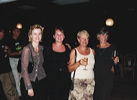
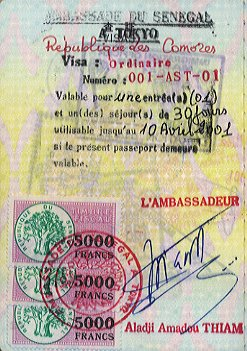
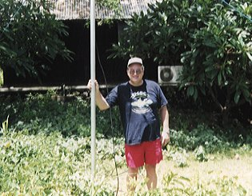
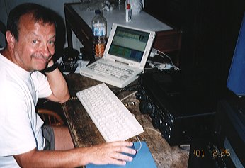
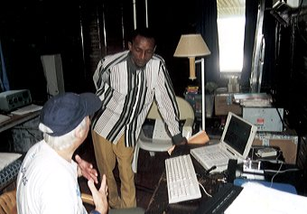
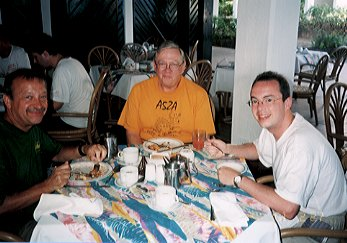
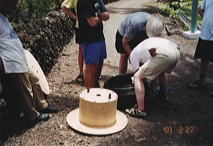
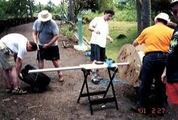

The Five Star DXers Association


FSDXA DXpedition
08.Feb-28.Feb.2001
|
 左からGina(M0BJL)、Janet(G3VMW)、Barbara(5B4AGC)、Trish(G3NUG) *( )内はOMのコールサイン
 コモロのVISAはセネガル大使館が代行している。   FO0AAAのPediにも参加したN7CQQ・John／RTTY・PSKでアクティブにQRVした9H1EL・Jeff
  (左)D68Cを訪れたコモロ唯一のTV局・CRTVの技術担当 (右)A52AのPediにも参加したW3WL・Wes=中央= 左は9H1EL・Jeff、右はDL7AKC・Jens
  アンテナ撤収後は同軸ケーブル(約3000m)の巻き取り作業。 "一巻き"はフォーミュラーカーのタイヤほどの大きさに。
 D68C Homepage |
 |
D68C(1) DXpedition |
 |
D68C(2) Projects |
 |
D68C(3) Operating |
 |
D68C(4) Comoros |